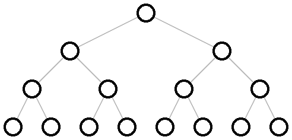
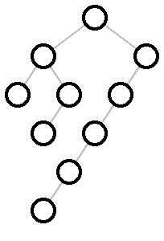

12 Tree Layout
这些函数指定了树的布局和将其渲染为 pict 的函数。
| (require pict/tree-layout) | package: pict-lib |
procedure
(tree-layout [#:pict node-pict] child ...) → tree-layout?
node-pict : (or/c #f pict?) = #f child : (or/c tree-layout? tree-edge? #f)
如果子节点是 tree-layout?, 那么它们的边缘是通过将相应的 tree-layout? 直接传递给 tree-edge 而创建的。 如果子节点为 #f ,则对应于不被绘制的叶子节点。
默认的 node-pict (当 node-pict 是 #f 时使用)是 。
procedure
(tree-edge node [ #:edge-color edge-color #:edge-width edge-width #:edge-style edge-style]) → tree-edge? node : (and/c tree-layout? (not/c #f))
edge-color :
(or/c string? (is-a?/c color%) (list/c byte? byte? byte?)) = "gray" edge-width : (or/c 'unspecified real? #f) = 'unspecified
edge-style :
(or/c 'unspecified 'transparent 'solid 'xor 'hilite 'dot 'long-dash 'short-dash 'dot-dash 'xor-dot 'xor-long-dash 'xor-short-dash 'xor-dot-dash) = 'unspecified
当 edge-width 为 'unspecified 时,线宽将不会被设置。 这样做的目的是允许通过 linewidth 为整个图片设置线宽。 否则, edge-width 的解释方式与 linewidth 函数的宽度参数相同。 edge-style 的行为与此类似,它的参数被解释为 linestyle 函数的样式参数。
> (naive-layered (tree-layout (tree-edge #:edge-width 3 (tree-layout)) (tree-edge #:edge-color "red" #:edge-style 'dot (tree-layout))))
Changed in version 1.3 of package pict-lib: 增加了 #:edge-width 选项。
Changed in version 1.9: 增加了 #:edge-style 选项。
procedure
(tree-layout? v) → boolean?
v : any/c
procedure
(binary-tree-layout? v) → boolean?
v : any/c
> (binary-tree-layout? (tree-layout #f #f)) #t
> (binary-tree-layout? #f) #t
> (binary-tree-layout? (tree-layout (tree-layout) (tree-layout))) #f
procedure
(tree-edge? v) → boolean?
v : any/c
procedure
(naive-layered tree-layout [ #:x-spacing x-spacing #:y-spacing y-spacing #:transform transform]) → pict? tree-layout : tree-layout? x-spacing : (or/c (and/c real? positive?) #f) = #f y-spacing : (or/c (and/c real? positive?) #f) = #f transform : (-> real? real? (values real? real?)) = values
transform 参数在每个节点铺设完毕后对其进行坐标转换。 产生的图片的边界框包含了原始边界框的角,而这些角已经被应用于变换。
> (define (complete d) (cond [(zero? d) #f] [else (define s (complete (- d 1))) (tree-layout s s)])) > (naive-layered (complete 4)) 
> (naive-layered (complete 4) #:transform (lambda (x y) (values y x)))
> (naive-layered (tree-layout (tree-layout) (tree-layout) (tree-layout (tree-layout) (tree-layout) (tree-layout (tree-layout) (tree-layout)))))
> (define right-subtree-with-left-chain (tree-layout (tree-layout (tree-layout #f #f) (tree-layout (tree-layout #f #f) #f)) (tree-layout (tree-layout (tree-layout (tree-layout (tree-layout #f #f) #f) #f) #f) #f))) > (naive-layered right-subtree-with-left-chain)


Changed in version 1.13 of package pict-lib: 增加了 #:transform 选项。
procedure
(binary-tidier tree-layout [ #:x-spacing x-spacing #:y-spacing y-spacing #:transform transform]) → pict? tree-layout : binary-tree-layout? x-spacing : (or/c (and/c real? positive?) #f) = #f y-spacing : (or/c (and/c real? positive?) #f) = #f transform : (-> real? real? (values real? real?)) = values
同一层次的树的节点与图的顶部有相同的垂直距离
父节点在其子节点上居中,子节点从左到右排列、
同构子树的绘制方式相同,无论它们出现在整棵树的哪个位置,以及
一棵树和它的镜像产生的图片是彼此的镜像(这对完整树的子树也适用)。
更确切地说,它递归地铺设两个子树,然后在不调整两个子树的布局的情况下, 尽可能地将它们移到一起,将新树的根放在其子树的中心。 (它在线性时间内完成这一工作,使用了论文中讨论的巧妙技术)。
x-spacing 和 y-spacing 是每一行和每一列所占的空间量,以像素计算。 如果 x-spacing 是 #f,它就是树中最宽的节点 pict? 的宽度。 如果 y-spacing 是 #f,它是树中最宽节点 pict? 宽度的 1.5 倍。 transform 与 naive-layered 中相同。
> (binary-tidier (complete 4)) > (define (dl t) (tree-layout (tree-layout #f #f) t)) > (define (dr t) (tree-layout t (tree-layout #f #f)))
> (binary-tidier (tree-layout (dr (dr (dr (dl (dl (dl (complete 2))))))) (dl (dl (dl (dr (dr (dr (complete 2))))))))) > (binary-tidier right-subtree-with-left-chain) 
Changed in version 1.13 of package pict-lib: 增加了 #:transform 选项。
procedure
(hv-alternating tree-layout [ #:x-spacing x-spacing #:y-spacing y-spacing #:transform transform]) → pict? tree-layout : binary-tree-layout? x-spacing : (or/c (and/c real? positive?) #f) = #f y-spacing : (or/c (and/c real? positive?) #f) = #f transform : (-> real? real? (values real? real?)) = values
它根据 x-spacing 和 y-spacing 在各层之间增加水平和垂直空间。 如果其中一个是 #f,则使用最大节点的 1.5 倍大小。 transform 与 naive-layered 中的相同。
> (hv-alternating (complete 8))
Changed in version 1.13 of package pict-lib: 增加了 #:transform 选项。
Added in version 6.0.1.4 of package pict-lib.